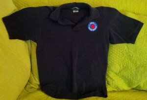

I volunteered to assist with the Ladies Only NRA First Steps Pistol class at the Wake County Range yesterday (9/13/14). I taught as part of a team and covered the section on ammunition.
{kind=link}
This is a 4 hour class designed for new shooters. Most of the time is spent in the classroom but every student shoots from a benchrest position as part of the class. Pistols in .22lr are available for each student. If you have a gun and you want to shoot it, that is an option also. There is no test and every student is issued a certificate of completion. If you take the NC Concealed Carry class at the Wake County range, you’ll get this class again as the gun safety portion of the day.
I’ve only taught one other time since I got my instructor credentials, and I realized I needed an instructor shirt to wear. I bought a long sleeve NRA Instructor shirt last winter, but it’s summer now and that indoor range can be sauna hot this time of year. I also bought some instructor patches and it was time to put them to use. I had an old golf shirt I received from a previous employer back in the early 1990’s. The logo was small and as I over laid the patch, I said “BINGO!”. I would never have imagined all those years ago that this shirt would have a second life with the NRA.

Thursday night I sewed on the patch. Friday night I drafted my lesson plan and Saturday I was at the range at noon to help set up for the class.
We had 18 ladies. I think at least half had never shot a gun before. By the time they left, we no longer had shooting virgins!
Teaching as part of a team is the best of all worlds: you get actual experience teaching and you have other instructors to back you up and give you feedback on how to improve. Volunteering at the Wake County Range means they take care of the publicity, the scheduling, the registration and they have student packets in stock. That’s all part of offering a class that most students never think about. It allows me to focus on improving my teaching skills.

These are all 50 round boxes of 9mm Luger ammunition.
They also have built up a great set of teaching aids. I wanted to contribute something so I put together an example of the variety of boxes that 50 rounds of 9mm Luger can come in. NOTE: No live ammunition is allowed in the classrooms, so all these boxes are empty. I shot most of this long ago.
I also had plastic packs of brass in common handgun sizes. I only shoot .22 and 9mm but when you pick up your brass at a public range, you end up with a little bit of everything. I even had a single bullet (just the lead) I’d found on the floor. I may reach out to friends who reload to get a few more examples to show some of the variety of bullets available.
If you know a woman who would like to learn to shoot from a staff of female instructors, check out the classes on the upcoming class schedule at their website. They typically post 3 months at a time, so if you don’t see what you want now, check back later.
Next up for the ladies:
N.C. Concealed Carry Handgun Certification Course
Sunday, September 21, 2014 (Ladies Only)
9 a.m.–5 p.m. Fee: $80